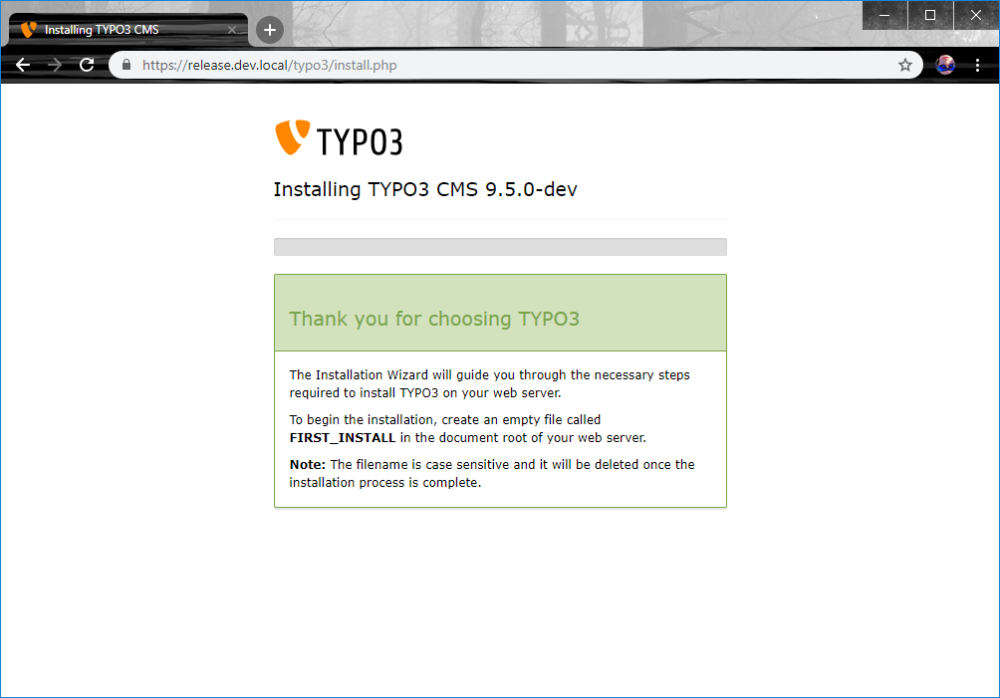
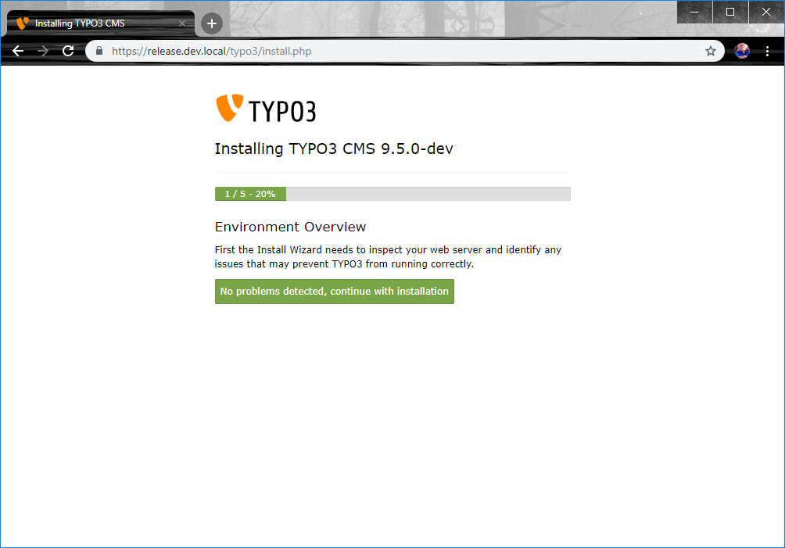
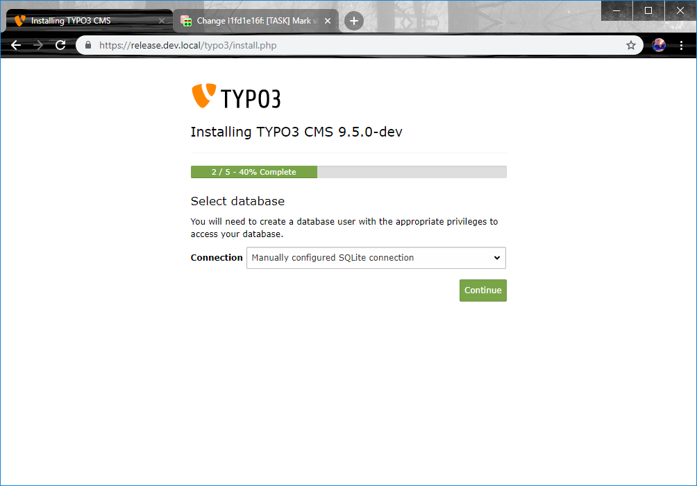
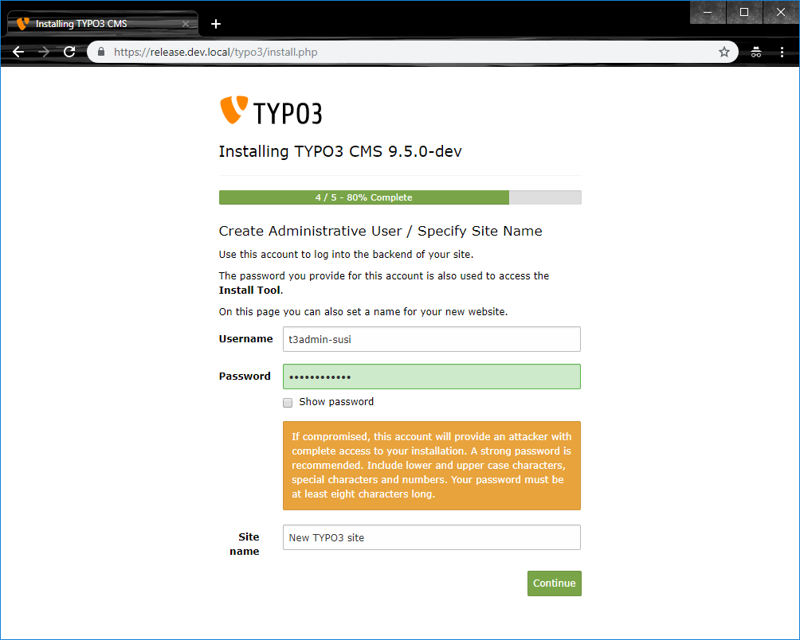
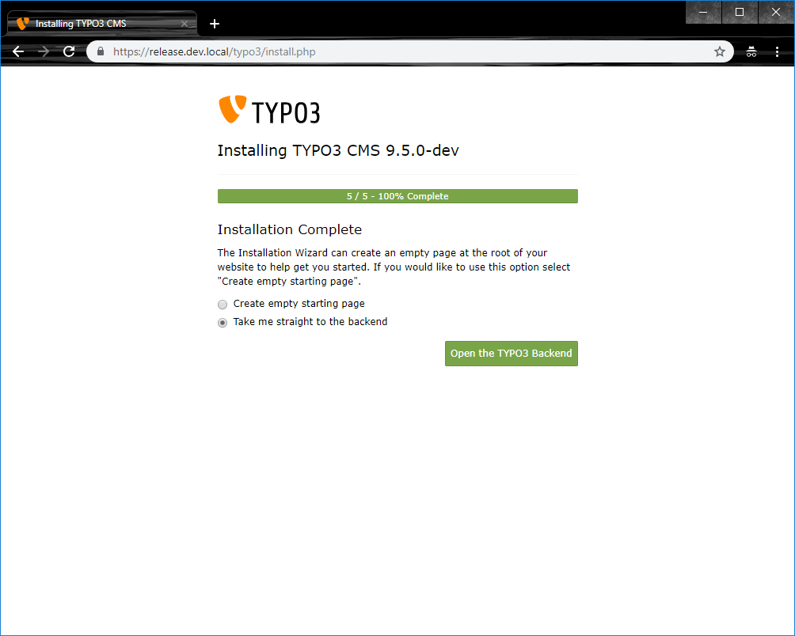

The Install Tool¶
Hit the start page of your freshly created site with your browser and you should see the “thank you for downloading”-message.
Success message after download.
Create the file FIRST_INSTALL in your web root directory (
publicfolder) and reload the page. You will be redirected to the install tool. It will guide you through the steps for installing TYPO3. The Install Tool is located in ‘typo3/install’ in your installation which for example would be http://www.example.com/typo3/install.php.This is what you should see:
Install Tool in 1-2-3 mode, first step.
In case you have problems in your Environment, you will get warnings or hints in this screen. In this case, you should try to fix them; the “Troubleshooting” section might help you.
Choose database connection. In this step, you can choose the database management system TYPO3 should run with. Via the GUI you can choose between MySQL (compatible to MariaDB), PostGres or SQLite if available. SQLite requires no further configuration and is a good choice for testing TYPO3, but you should choose one of the others for running production grade web sites.
Install Tool in 1-2-3 mode, second step.
Choose Database. If you did not select SQLite in the previous step, you have to select an empty database for TYPO3 now (or create one if your user is allowed to).
Enter a username and password for your first TYPO3 administrator account. (For security reasons, it’s best not to use the name admin.) This password will also be used for the Install Tool. The “site name” will identify this installation (in the page tree and browser title).
Install Tool in 1-2-3 mode, forth step.
In the last step you can choose whether you want to start with an empty TYPO3 or if you want to have a basis to start from.
Install Tool in 1-2-3 mode, fifth step.
The basic installation is now complete!
After the basic installation procedure is complete, TYPO3 will be working and the most appropriate settings will have been made for you. You will get redirected to the Backend and can log in with your administrator account.
If you want to make changes to your installation settings at a later date, use the “Admin Tools” in the backend. You can find more information in the section “In-Depth Installation”, subsection “TYPO3 System Management” below.